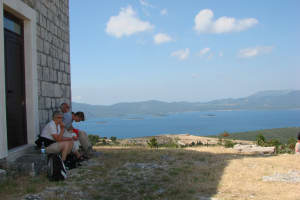
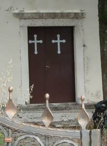
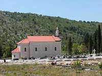

KOMARNA Sightseeing

| |
| |
 Walking in the surrounding area of Komarna
Walking in the surrounding area of Komarna

There are a few routes you can walk without first using a car to get
you to the starting position - and there are a few where you should
use a car. When I suggest you use a car it is to avoid walking on the
main coastal road where there often is heavy traffic, and you may not
feel comfortable walking at the roadside. Most Croatians consider it
futile to walk as God has given you the car.
However, first a few words of warning about walking in the summer:
Bring water - a hat to protect your head - water - good shoes - water
- sun cream - water - a reasonable constitution - water. I am 75
(2019) years old, I do not exercise much and I am able to walk the
paths I propose - but I am also reasonably fit, in good health, and I
have not tried to walk them in the high season where the temperature
gets high and the sun is strong. Take care of yourself.
Start walking from Komarna
Unfortunately the bridge construction has blocked the roads to the east. You can walk down to the beach and a bit further, but then you come up against a fence that protects the workplace and we don't expect that to come down until 2022.
Route 1 - Komarna - 2.5 km - Obvious and easy to find. Walk around the village - along the water and back on the roads.
Route 4A - Round trip to
the west - 6 km, walking in the valley under the main road and back on
top of the hills with view of the ocean.
Walk up against the main road and turn left down a small road near the
top - 550m
When the road divides after 50 meters keep right and walk until you
see a road on your left, 2.5 km.
If you continue straight ahead the road will take you the Kremena and
eventually also to Duba. Read more about that under route 6.
Turn left and walk uphill. The road may be closed by a gate. If you
don't feel like climbing over or under the gate - that's it and you
must turn back the same way you came.
If the gate is open walk up 500m. The road to the right is a dead end
and leads out to a place where the Yugoslav navy had anti-aircraft
guns to protect the caves that are in the cliffs right under your
feet.
Turn left and walk on the top of the hills back to Komarna, 3 km.

Route 4B - Round trip to
the west - 5.5 km. Same as route 4A, but the other way around and with
a possible combination with route 4C and 4D.
Walk up against the main road and turn left down a small road near the
top - 550 m. When the road divides after 50 meters keep left. Walk
370m and turn right.
Walk 1.8 km and you reach a gate. The road may be closed by the gate.
If you don't feel like climbing over or under the gate turn back 120 m
and look for an almost invisible road on you right that goes down
towards the sea. Continue the description on 4D at the star mark (*)
Route 4C - Round trip to
the west - 6 km - first going down to the sea and then up on the hill.
Walk up against the main road and turn left down a small road near the
top - 550 m.
When the road divides after 50 meters keep left. Walk 370m and turn
left.
Walk down along the water 1 km and round a bend and turn left into an
almost overgrown path.
Follow that path for 1 km and at the top turn right on a road towards
Komarna and walk 1.7 km to where you entered the wine fields. From
here there is 1 km down to the village.
Route 4D - Round trip to
the west - 5.5 km - first stay on the hill and then down to the sea.
Walk up against the main road and turn left down a small road near the
top - 550 m.
When the road divides after 50 meters keep left. Walk 370m and turn
right.
Walk 1.7 km and look for an almost invisible road on you left that
goes down towards the sea.
If you reach a gate you have missed it. Then walk back 120 m and try
again.
(*) Follow the path for 1 km. and turn left when you reach another
road. Walk along it and along the wine fields for 700 m. Turn left and
walk back towards Komarna.
Drive to get to a starting point:
Route 5 - Stolovi by car -
Minimum 5 km, but actually most roads mentioned here can be navigated
by car, so it depends on where you choose to park and walk. The area
around Stolovi and Slivno is beautiful and has been inhabited for many
thousand years.
Drive your car to the main road and turn left until you see a small
road turning sharply to the right after 3.5 kilometers.
Park your car here or drive up the road to Stolovi.
Distance from the main road to Stolovi is 2 km.
From Stolovi, there is a nice walk if you turn right. When there is a
junction after 250m keep to the left.
Walk about a kilometer and enjoy the views. On the way you pass a site
that is under development and will turn into an eco-farm. Notice the
small stone hills that have been preserved. They are old bogomil
graves from the Roman time more than 1000 years ago. If you continue
to walk you will reach a dead end 2 km after the T-junction where you
turned right at Stolovi. It is a nice walk and the last part is
through woods, and you will eventually end up overlooking Duboka, but
unfortunately you have to walk the same way back.
If you continue straight on from Stolovi you reach a T-junction. Turn
left to walk around the hill of the church of Sv. Liberate. It is a
nice walk through old forest trees. DO NOT SMOKE. The forest is rare
in Dalmatia and this one has so far been spared the forest fires that
so often rage during summer. If you choose not to turn left at Stolovi
to walk through the forest, but you continue to go ahead you will
reach a T-junction and parking place after 400 m.

At the parking place, there is a small path to the church on the top of the hill. Turn so you face the hill. You will be looking at a low stone fence in front of you. Go to the right end of the fence and you can see the path going up. It is a climb of 300m and the reward is a fantastic 360 degree view of the area.
From the parking and T-junction, the road goes down to the church of
Slivno. Distance is 850 m.
Look at the map if you want to walk a longer trip, or take the car
along and drive out to Smrdan Grad.
Route 6 - Raba and Kremena - 7
km, most roads here can be used by a car - but not all - be careful.
The area around Kremena used to be inhabited by 50% Serbs and there is
still an orthodox church on the hill in Kremena.
Drive your car towards Opuzen and turn left towards Raba and Kremena,
4 km.
Park the car here and walk towards Kremena and Duba until there is a
road turning of to the right, 1 km.
Follow the road to the right down to Duba.
In Duba turn left along the water.
Turn left on the road here and walk towards Kremena.
Follow the road and it will lead you all the way back to where you
parked the car.
Sv. Spiro
To find the orthodox church drive from Raba towards Kremena. After 1 km keep to the left. Drive 420 meter to a sharp right turn and drive 150 meters to where there might be a sign saying Sv. Spiro, but

don't count on it. Park your car here. There is a 700-meter walk to the church.- Take the road that is paved with concrete.
- 50 meters to a crossroad - continue straight ahead.
- 120 meters to a T-junction - turn right.
- 350 meters to a crossroad - follow the concrete road ahead.
- 150 meters along a stone wall and you see the church.
You may drive closer to the church by driving 300 meters from the
sharp turn and then turn left. Drive 300 meters from there and turn
left again and after another 100 meters the road to the church is on
your right.
Route 7 - Raba and return
to Komarna, one-way by car and walk home - 6 km, this route will take
you down past a bay where there are caves used by the Yugoslav navy to
hide their ships.
Get a lift towards Opuzen and get off the car at the road to Raba and
Kremena, 4 km.
Walk towards Kremena, 1.8 km
Where the road turns right towards Kremena and Duba, turn left and
walk down to the beach, 500m. 
Continue straight ahead and walk until you reach the road down to
Komarna 3.5 km.
Walk along the church wall and keep right. This will lead you down a
small road that leads to an abandoned village. You can also drive the
car down to a spot 1.1 km from Slivno church and walk the last 2-300
meter and have a look at the area and the ruins of the houses. The
village has been inhabited on and off for maybe 4000 years and nobody
lives here now, but people still come to look after the olive trees.
If you follow the main road you arrived by you can walk to Smrdan Grad, 2km. Half-way you pass an old burial ground with Illyrian and Bogomil stones. It was used by the people who inhabited the village you can get to by the other parallel road.
The road to Smrdan Grad can also be used by car and from Smrdan Grad you can continue straight on for 1 km and turn right. This will take you down to the coastal road just before the border station. From here there is about 5 km back to Komarna. If you are tough enough to walk here then cross the road and you can walk along the water back to Klek. Continue through Klek and continue through Radalj and you are only 2 km from Komarna.